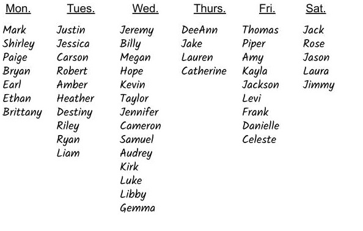

What You Should Know - Vernier Elementary Sensing Science Collection: Lever Up!
 Important Vocabulary
Important Vocabulary
- Lever - simple machine made of a rigid beam and a fulcrum
- Fulcrum - the point on which a lever rests or is supported and on which it pivots
- Simple Machines - basic devices that help accomplish physical tasks with few or no moving parts
- Force - a push or pull
- Acceleration - rate of change of the velocity of an object with respect to time
- Velocity - the speed of something in a given direction
Simple Machines
Simple machines make work easier. They have few or no moving parts, and they work by changing the direction of a force or the amount of force needed to do something. To be classified as a machine, it has to do one or more of the following:
- transfer a force from one place to another
- change the direction of a force
- increase the magnitude of a force
- increase the distance or speed of a force
There are six different simple machines.
Select each item to learn more.
Pulley
A pulley is a grooved circular disk (or disks) that guide a rope or cable pulled around its perimeter. With a single pulley the direction of an applied force can be changed, such as pulling a rope down to lift a weight up. However, using a combination of pulleys in a pulley system can change both the amount and direction of the applied effort.
Examples: large machines, like cranes, bulldozers and elevators.

Screw
A screw is an inclined plane that is wrapped around a cylinder. As the threads of the screw turn, they exert an output force on the wood, pulling the screw into the wood. Friction between the screw and the wood holds the screw in place. Screws are used in a variety of ways, including fasteners that are used to attach wood or metal and for digging holes.
Example: bolts that are used with nuts; screws holding shelves to the wall

Lever
A long beam that rests on a point or support called a fulcrum is called a lever. By positioning the fulcrum close to a heavy object and applying an effort from far away, levers can be used to lift enormous loads with ease. The object being moved by the lever is often called the load, while the force applied to the lever is called the effort.
Example: Crowbars help workers and carpenters easily extract nails from wood.

Wedge
An object that tapers to a thin edge and forces a substance apart is a wedge. When you use a wedge, you move the inclined plane itself instead of moving an object along the inclined plane. It can be used to split things apart. Modern cars and jets are designed using the principle of a wedge to help them cut through the air by including a pointed wedge at the front.
Examples: ax, doorstop, zipper, pencil sharpener, shovel

Wheel & Axle
The wheel & axle is composed of a circular wheel connected to a circular shaft or axle. This device rotates around the common axis and has the ability to increase a rotational force also known as torque.
Examples: steering wheel, jet engine, mechanical gears, and even doorknobs.

Inclined Plane
A flat, sloping surface that is used for raising or moving heavy objects from one place to another is an inclined plane. Inclined planes are used to lift loads that would otherwise be too heavy to lift straight up. The angle or the steepness of the inclined plane determines how much effort is required to move an object. The steeper the angle, the more effort is required.
Example: ramps

Parts and Classes of a Lever
A lever has four main parts:
- beam
- fulcrum
- load
- effort
The beam, also called the arm, rests on the fulcrum and helps shift the weight between the load and effort. The fulcrum is the support or point of rest for the beam. It is also the point where the pivot happens when shifting the weight on the beam. The load (also known as the resistance) is where the object is being lifted, and the effort is where the force is being applied to make the object move.
There are three types, or classes, of levers. Each class has the same four parts, but are located in different places to carry out different jobs and are all still classified as levers.
Select each tab to learn more.
In a first class lever the fulcrum is in between the effort and resistance (the load).
The closer the fulcrum is to the load, then less effort will be required to move the load. If the fulcrum is closer to the effort, then more effort is needed to move the load. These levers are useful for lifting large loads with little effort.
Examples: Seesaws, crowbars, car jack, scissors

A second class lever has resistance between the effort and the fulcrum. If the load is closer to the fulcrum, less effort will be required to move the load. If the load is closer to the effort, then more effort will be required to move the load. These levers are useful for moving large loads short distances.
Examples: Wheelbarrows, wrenches, bottle opener, oar

In a third class lever the effort is between the resistance and the fulcrum.
If the fulcrum is closer to the load, less effort will be required to move the load. If the fulcrum is closer to the effort, then more effort is needed. Third class levers are useful for making precise movements.
Examples: Staplers, your forearm, tweezers, swinging a baseball bat

Creating a Data Chart and Graph
Charts and graphs are often used to summarize data collected. They make it easy to see changes in the information that was gathered.
Graphs and charts are meant to be visual and represent data without a lot of things to read, so when creating them, it is important to focus more on how to present visual information more than words. Charts and graphs come in many different forms.
Once data is collected, the first thing you need to do is organize your data.
Example:
The hospital Melody was working for wanted her to record the names of patients who were being admitted for six days.

After collecting data for six days, the hospital asked Melody to go back through the data and, for each day, count how many males and females were admitted each day. After creating the table, they wanted Melody to also put the data into a double line graph so they can visually see any trends or changes between days of the week and number of patients or genders.
| Day | Number of Patients | |
| Male | Female | |
| Monday | 4 | 3 |
| Tuesday | 5 | 5 |
| Wednesday | 7 | 7 |
| Thursday | 1 | 3 |
| Friday | 4 | 5 |
| Saturday | 3 | 2 |

Career Connection and Real-World Application
Construction Workers
Construction workers use levers in almost all of the work they do. They use wheelbarrows to haul materials from one side of the work site to the other, cranes to move heavy materials; even the mechanism to tilt the dump part of the dump truck is part of a lever system. They also use crowbars, wrenches, and many other tools that can be labeled as levers to help them with their daily tasks.

Forester
A forester is a professional in charge of caring for, planting, and managing trees or forests. They are involved in a range of activities including restoration, conservation, timber harvest, and managing protected wooded areas. Foresters use tools like pickaxes in their daily tasks.